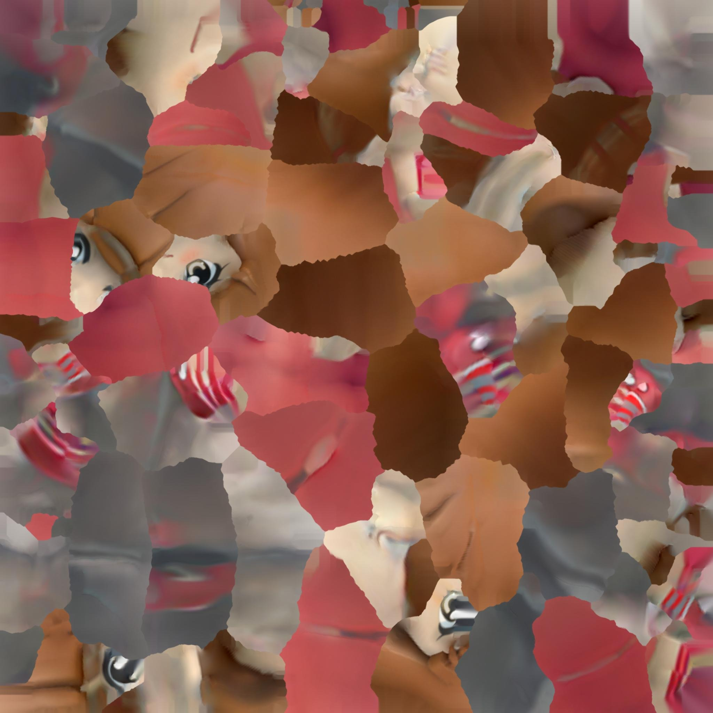

Ao apadrinhar um "fera" do curso de Ciência de Dados e Inteligência Artificial da UFPB, o veterano se compromete a auxiliar o calouro no curso e ficar à disposição para tirar quaisquer dúvidas que possam surgir. É uma excelente oportunidade de fazer novos amigos e ajudar na adaptação ao ambiente acadêmico.

Ana Beatriz Mota da Cruz
Matemática
Ballet
Viagem
Adotar
Instagram: @biamotacruz; LinkedIn: anabiamotacruz
Thiago Marques
Tecnologia
Música
Carros
Adotar
Instagram: @thiago__marques; Discord: Thiago Marques #3189
Leonardo Filho
Jogos
Aprendizado
Matemática
Adotar
Discord: AlortCraft#9588
Cauã Henrique
Xadrez
Livros
Filmes
Adotar
Sofia Pontes
Música
Esportes
Jogos
Adotar
Instagram: sofiapllima
Maria Nathália Pereira Rocha
Leitura
Praia
Violão
Adotar
Instagram: @ttaliarocha
Pedro Lucas Alves da Silva Barbosa
FIFA
Filmes
Amizades
Adotar
Instagram: @crvgpedroo; LinkedIn: pedro-lucas-alves-da-silva-barbosa
Yosef Nascimento
Jogos
Fórmula 1
Cozinhar
Adotar
Instagram: yosefjoseph; LinkedIn: yosef-joseph; Discord: yosefjoseph
Vynicios Daniel
Jogos
Música
Programação
Adotar
Instagram: Vyni_smr
Josinaldo da Silva Sousa
Praia
Esportes
Dados
Adotar
Discord: josinaldo945
Wilton Terto Leal
Arte
Tecnologia
Glitch Art
Adotar
Instagram: @wltn.tl, @fruwill
Luiz Carlos Veloso
Jogos
RPG
Cozinhar
Adotar
Instagram: luizcarlost_t
João Victor de Souza Lucena Meireles
Esportes
Jogos
Inteligência Artificial
Adotar
Instagram: jvsouza_l
Diego Sousa
Jogos
Música
Esportes
Adotar
Instagram: diegosousam_; Discord: legodego ou Dego#6477
Jonatas Miguel de Sousa Soares
Jogos
Música
Vôlei
Adotar
Instagram: @jonatas_migs; LinkedIn: jonatasmss
Walker Teotonio
Animes
Jogos
Segurança da Informação
Adotar
Instagram: xdwktcb
Julia Rosa
Música
Jogos
Tecnologia
Adotar
Instagram: juliarosa05
Vinícius Alencar de Medeiros
Jogos
Música
IA
Adotar
Instagram: meh_vinicius